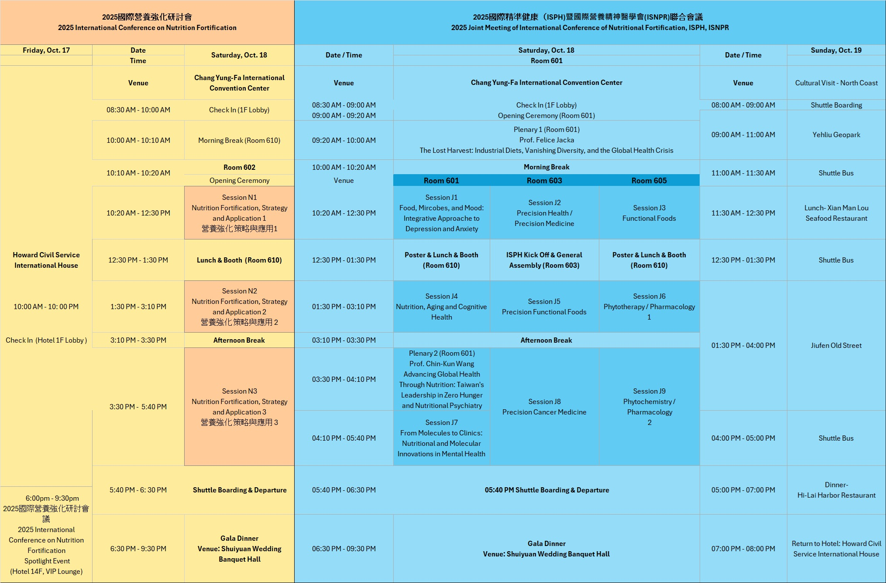

⚠️ Preliminary Program. Subject to change; refer back for updates.
| Time | Program |
|---|---|
| 18:00–18:30 | Reception |
| 18:30–18:40 | Opening Remarks — Chairs: Dr. Chin‑Kun Wang, Dr. Fereidoon Shahidi, Dr. Perry Ng |
| 18:40–21:10 | Spotlight Event (see details below) |
| 21:10–21:30 | Total discussion |
| Time | R601 | R602 | R603 | R605 | |
|---|---|---|---|---|---|
| 08:30–09:00 | Registration | ||||
| 09:00–09:20 | Opening Ceremony | ||||
| 09:20–10:00 | Plenary 1 — Prof. Felice Jacka (R601) | ||||
| 10:00–10:20 | Morning Break ☕ | ||||
| 10:20–12:26 | Session J1 — Food, Microbes & Mood | Session N1 — Nutrition Fortification, Strategy and Application 1 | Session J2— Precision Health / Medicine | Session J3— Functional Foods | |
| 12:00–13:30 | Lunch Break 🍽️ Annual General Meeting for ISPH members (R603) | ||||
| 13:30–15:10 | Session J4— Nutrition, Aging & Cognitive Health | Session N2— Nutrition Fortification, Strategy and Application 2 | Session J5— Precision Functional Foods | Session J6— Phytochemistry / Pharmacology 1 | |
| 15:10–15:30 | Afternoon Break ☕ | ||||
| 15:30–16:10 | Plenary 2 — Prof. Dr. Chin‑Kun Wang (R601) | ||||
| 16:10–17:50 | Session J7— Nutrition from the Moleculars and Cells | Session N3— Nutrition Fortification, Strategy and Application 3 | Session J8— Precision Cancer Medicine | Session J9— Phytochemistry / Pharmacology 2 | |
| 18:30–21:30 | Gala Dinner 🥂 | ||||
| Time | R601 | R602 | R603 | R605 |
|---|---|---|---|---|
| 08:30–09:00 | Registration (ISNPR); Cultural Visit (ISPH) | |||
| 09:00–09:40 | Plenary 3 — Prof. Kenji Hashimoto (R601) Resilience Enhancing Effects of Nutrition Through the Gut-Brain Axis | |||
| 09:40–10:00 | Morning Break ☕ | |||
| 10:00–11:40 | Lifestyle, Diet and Neurodevelopment J10 | MBI Symposium 1 J11 | MBI Symposium 2 J12 | Blind Spots in Nutritional Psychiatry Research J13 |
| 11:40–13:30 | Poster & Lunch & Booth (R610) Annual General Meeting (AGM) for ISNPR members (R603) | |||
| 13:30–15:10 | Mental Health and the Potential of Plant-Based Approaches J14 | Diet and Depression J15 | Mental Health and Nutrition: New Insights J16 | Smart Nutrition for Mental Health: AI-Generated Diets and Food Security Interventions J17 |
| 15:10–15:30 | Afternoon Break ☕ | |||
| 15:30–16:10 | Plenary 4 — Prof. Joseph Hibbeln (R601) Challenges in Implementing Nutritional Psychiatry on a Public Health Level | |||
| 16:10–17:50 | Translation of Clinical Psychiatric Nutrition Research into Solutions that Improve Human Mental Health J18 | Nutrition and Mental Health: Insights from International Psychologists in Clinical Practice J19 | Lifestyle Psychiatry: Findings From the Lancet Commission on Physical Health in People Living With Mental Illness J20 | The Role of Multinutrients in the Treatment of Psychiatric Disorders: The Science and the Practice J21 |
| 17:50–18:30 | Award Ceremony & Closing (R601) | |||
| Time | Speaker | Affiliation / Country | Title |
|---|---|---|---|
| 18:40–18:55 | Dr. Fereidoon Shahidi | Memorial University of Newfoundland · Canada | Nutrient Fortification through Upcycling: Value-Added Applications of Marine Processing By-Products in Food and Health" |
| 18:55–19:10 | Dr. Debasis Bagchi | Adelphi University · USA | Integrating Shatavarin IV into Nutrient Fortification Strategies for Neuroprotection and Anti-Inflammatory Benefits |
| 19:10–19:25 | Dr. Livia Simon Sarkadi | Hungarian University of Agriculture and Life Sciences · Hungary | Nutrient Fortification Strategies to Preserve and Enhance Fatty Acid Profile in Donor Breast Milk after Pasteurization |
| 19:25–19:40 | Dr. Jun Nishihira | Hokkaido Information University · Japan | Advancing Nutrient Fortification through the Ebetsu Model: Precision Nutrition for Food Functionality and Health |
| 19:40–19:55 | Dr. Petras Rimantas Venskutonis | Kaunas University of Technology · Lithuania | Antioxidant dietary fiber from fruit processing side‑streams for bread fortification |
| 19:55–20:10 | Dr. Kenji Sato | Kyoto University · Japan | Perspective Review: Deterioration of the Gut Environment in Japan Over the Past Five Decades — Decline in Dietary Fiber Intake or Other Dietary Factors? |
| 20:10–20:25 | Dr. Sirichai Adisakwattana | Chulalongkorn University · Thailand | Encapsulated egg white noodles as a functional protein for satiety and weight management |
| 20:25–20:40 | Dr. M. Betül Yerer Aycan | Erciyes University · Turkey | Targeted nutraceutical interventions in cancer: A precision medicine approach |
| 20:40–20:55 | Dr. Takuya Sugahara | Ehime University · Japan | Anti‑inflammatory function of sudachitin and demethoxysudachitin from Citrus sudachi |
| 20:55–21:10 | Dr. Kuan‑Chen Cheng | National Taiwan University · Taiwan | Artificial intelligence assisted technology in precision fermentation for Nutrient-Enriched Foods development |
| 21:10–21:30 | Total Discussion: Chairperson: Dr.Perry Ng, Dr. Diana Bogueva, Dr. Fercidoon Shahidi, Dr. Jun Nishibira, Dr. Katarzyna Swiader, Dr. Kenji Dr. Livia, Simon Sarkadi, Dr. Petras Rimantas Venskutonis, Dr. Thierry Astruc | ||
| Time | Speaker | Affiliation / Country | Title |
|---|---|---|---|
| 10:20–10:30 | Dr. Yi‑Chin Lin | Taiwan | Vitamin D and calcium fortification — current status |
| 10:30–10:40 | Dr. Yi‑Fang Liu | Fu Jen Catholic University · Taiwan | Iodine deficiency and fortification strategy |
| 10:40–10:50 | Dr. Shu Ru Zhuang | Chung Shan Medical University · Taiwan | Dietary Behavior, Sub‑health Symptoms, and Public Perceptions of Nutritional Fortification: A Cross‑Sectional Study in Taiwan |
| 10:50–11:02 | Total Discussion | ||
| 11:02–11:16 | Dr. Thierry Astruc | INRAE · France | Design and characterization of a sustainable food for people with anaemia |
| 11:16–11:30 | Dr. Katarzyna Świąder | Warsaw University of Life Sciences · Poland | Co‑creation as a Catalyst for Developing Tailored Food Products for Special Dietary Needs |
| 11:30–11:44 | Dr. Diana | Curtin University Sustainability Policy (CUSP) Institute · Australia | Reimagining food fortification through a consumer‑centered approach |
| 11:44–11:58 | Dr. Thierry Regnier | Tshwane University of Technology · South Africa | African mushrooms as preventive healthcare and nutrition intervention |
| 11:58–12:12 | Dr. Indrawati Oey | University of Otago · New Zealand | Incorporating Faba Bean into Wheat Bread as a Fortification strategy to Boost Protein and Fiber Levels |
| 12:12–12:26 | Dr. Mathoto Thaoge | Tshwane University of Technology · South Africa | Development of functional sorghum‑based foods fortified with protein and probiotics… |
| Time | Speaker | Affiliation / Country | Title |
|---|---|---|---|
| 13:30–13:44 | Dr. Mari Maeda Yamamoto | NARO · Japan | Development of nutritionally balanced self‑care diets |
| 13:44–13:58 | Dr. Khaw MC Richard | Singapore Institute of Food Science & Technology · Singapore | Singapore Standards and Guidelines in Nutrition Fortification and Claims in Food Products |
| 13:58–14:12 | Dr. Dony Dahana | Osaka University · Japan | Dual certification regulation and its impact on functional food market |
| 14:12–14:26 | Dr. Liviu Gaceu | Transilvania University of Brasov · Romania | Vulnerable plates: What we (Don’t) know about food and health |
| 14:26–14:40 | Dr. Christelle Bou Mitri | Notre Dame University‑Louaize · Lebanon | Trends and development of plant‑based milk and dairy alternatives |
| 14:40–14:54 | Dr. Azrina Azlan | Universiti Putra Malaysia | Are Ready‑to‑Eat Foods a Healthy Alternative? A Review… |
| 14:54–15:08 | Dr. Maya Georgieva | Medical University of Sofia · Bulgaria | RP‑HPLC/DAD methods for separation of water‑ and fat‑soluble vitamins in supplements and brewer’s yeast |
| Time | Speaker | Affiliation / Country | Title |
|---|---|---|---|
| 15:30–15:44 | Dr. Anca Miron | Popa University of Medicine and Pharmacy · Romania | Plant‑derived therapies for rheumatoid arthritis: current status and trends |
| 15:44–15:58 | Dr. Gokare Ravishankar | Dayananda Sagar University · India | Biotechnologically derived food ingredients for vegetarian & vegan populations |
| 15:58–16:12 | Dr. Folake Idowu‑Adebayo | Federal University Oye‑Ekiti · Nigeria | Nutritional evaluation of fortified bread from wheat, soy‑cheese, and pineapple rind blends |
| 16:12–16:26 | Dr. Eni Harmayani | Universitas Gadjah Mada · Indonesia | Javanese turmeric + lemongrass drink: anti‑hyperglycemic, antioxidant & prebiotic activities (in vitro) |
| 16:26–16:40 | Dr. Elfahmi | Bandung Institute of Technology · Indonesia | Cassava bioflavonoids ameliorate metabolic syndrome in diet‑induced models |
| 16:40–16:54 | Dr. Ignasius Radix | Widya Mandala Surabaya Catholic University · Indonesia | Food packaging technology to support personalized nutrition recommendations |
| 16:54–17:08 | Dr. Rumiyati | Universitas Gadjah Mada · Indonesia | Indonesia’s local food resources for prevention/management of degenerative diseases (in vitro & in vivo) |
| 17:08–17:22 | Dr. Sylwia Zielinska | Wroclaw Medical University · Poland | Poppy family medicinals: Isoquinoline alkaloids from Papaveraceae |
| 17:22–17:36 | Mr. Ngwang Erick Chuye | Boyo Taxation Centre · Cameroon | Promoting nutrition through forest conservation in Cameroon |
| Time | Speaker | Affiliation / Country | Title |
|---|---|---|---|
| 09:20–10:00 | Prof. Dr. Felice Jacka | Deakin University · Australia | Plenary 1 — The Lost Harvest: Industrial Diets, Vanishing Diversity, and the Global Health Crisis |
| 10:20–10:36 | Dr. Aslam Hajara | Deakin University · Australia | Feasibility and tolerability of Musa sp. pseudo‑stem core powder as a dietary supplement… |
| 10:36–10:52 | Dr. Anat Elmann | The Volcani Center · Israel | Neuroprotective, anti‑anxiety, and microbiome‑modulating properties of Pulicaria incisa infusion |
| 10:52–11:08 | Dr. K. Emmanuvel Rajan | Bharathidasan University · India | Supplementation of probiotics prevents development of depressive‑like behaviour in early‑life social stress animal model |
| 11:08–11:24 | Dr. Polona Prelog | University of Ljubljana · Slovenia | More Than Mood: Nutritional Vulnerability in Geriatric Depression as a Multidimensional Risk Factor |
| 11:24–11:40 | Dr. Katharina Größbacher | Medical University of Graz · Austria | A Specialized Outpatient Clinic for Nutrition and Mental Health: A Pilot Study |
| 11:40–11:56 | Dr. Nadiya Boyko | Uzhhorod National University · Ukraine | Microbiome biomarkers in precise diagnostics and nutrition mental health and longevity… |
| Time | Speaker | Affiliation / Country | Title |
|---|---|---|---|
| 10:20–10:34 | Dr. Yong Sang Song | Myungji Hospital · Republic of Korea | Precision Medicine Approaches in Obesity: Integrating Adipose‑Derived Stem Cells and Microbial Extracellular Vesicles |
| 10:34–10:48 | Dr. Danny N. Dhanasekaran | University of Oklahoma HSC · USA | LncRNAs in the era of precision health… |
| 10:48–11:02 | Dr. Mona Elena Popa | UASVM Bucharest · Romania | Nutraceutical and functional food industry roles and responsibilities in precision health approach |
| 11:02–11:16 | Dr. Dae Young Kwon | Institute of Food Culture and Science · ROK | What is the most competitive power in personalized nutrition that we are prone to missing in the future AI era? |
| 11:16–11:30 | Dr. Dora Marinova | Curtin University · Australia | Generation Z and precision health |
| 11:30–11:44 | Dr. Claudia Cerella | Luxembourg Institute — Blood & Cancer | Advancing precision health and medicine through data‑driven discovery of prognostic and therapeutic markers |
| 11:44–11:58 | Dr. Sarah S. Comstock | Michigan State University · USA | Dietary impacts on the gut microbiota for improved health outcomes |
| 11:58–12:12 | Dr. Kuncoro Harto Widodo | Universitas Gadjah Mada · Indonesia | Precision Health through Hospital Food Service Optimization… |
| 12:12–12:26 | Dr. Loh Su Peng | Universiti Putra Malaysia | Optimising iron intake: Addressing iron deficiency Anaemia through precision nutrition and genetic insights |
| Time | Speaker | Affiliation / Country | Title |
|---|---|---|---|
| 10:20–10:34 | Dr. Wan Rosli Wan Ishak | Universiti Sains Malaysia · Malaysia | Does incorporating overripe banana extract (OBE) in food improve nutritional value and glycemic parameters? |
| 10:34–10:48 | Dr. Darshee Baxi | Navrachana University · India | Role of functional foods in PCOS: Investigating the gut microbiome – ovary cross talk |
| 10:48–11:02 | Dr. Zita Letviany Sarungallo | Papua University · Indonesia | Red fruit (Pandanus conoideus) oil: A natural antioxidant, colorant, and fortificant… |
| 11:02–11:16 | Dr. Irina Lazarova | Medical University of Sofia · Bulgaria | Alimurgic plants: The sustainable source of functional food and health promoting substances |
| 11:16–11:30 | Dr. Aline Issa | Notre Dame University‑Louaize · Lebanon | Functionality of fermented wheat germ extract (FWGE) — A showcase for novel fermented foods |
| 11:30–11:44 | Dr. Kunle Oni | Federal University Oye‑Ekiti · Nigeria | Effect of drying methods on the hydrophilic, reconstitution and viscosity of okra slices |
| 11:44–11:58 | Dr. Sri Raharjo | Universitas Gadjah Mada · Indonesia | Optimization and sensory acceptance of coconut water drinks fortified with α‑Tocopherol/Tocotrienol loaded NLCs |
| 11:58–12:12 | Dr. Nurul Husna Shafie | Universiti Putra Malaysia | Multiomics insight on bioavailability, gut microbiota and proteomic profiling of green tea polyphenols nanoparticles |
| 12:12–12:26 | Dr. Siti Raihanah Shafie | Universiti Putra Malaysia | Barnyard millet: A potential functional food for metabolic syndrome management |
| Time | Speaker | Affiliation / Country | Title |
|---|---|---|---|
| 13:30–13:46 | Dr. Vesna Simič | University Psychiatric Clinic Ljubljana · Slovenia | Sarcopenia and Nutritional Status in Alzheimer’s Disease… |
| 13:46–14:02 | Dr. Shizuo Yamada | University of Shizuoka · Japan | Beneficial effects of nobiletin on cognitive impairment with aging |
| 14:02–14:18 | Dr. Natalia Mikhailichenko | Nevron International Medical Center · Russia | Effects of standardized extract of Asparagus officinalis stem on normal aging or MCI |
| 14:18–14:34 | Mr. Debele ROBA | Deakin University · Australia | Statin Use and Risk of Late‑life Depression… Target Trial Emulation Study |
| 14:34–14:50 | Dr. Daphne Spyropoulos | Cleveland Clinic · USA | Fat and Fiber Consumption… and Sporadic Alzheimer’s Disease in Alabama and Cape Town |
| 14:50–15:06 | Ms. Johnston Donni | University of Queensland · Australia | Acceptability of Two Meal Provision Interventions for Individuals with Schizophrenia (SNaCK Study) |
| Time | Speaker | Affiliation / Country | Title |
|---|---|---|---|
| 13:30–13:44 | Dr. Christofora Hanny Wijaya | IPB University · Indonesia | Plant‑derived exosome‑like nanoparticles (PDEN) in precision functional foods: Ginger PDEN in Cajuputs® Candy |
| 13:44–13:58 | Dr. Amin Bin Ismail | Universiti Putra Malaysia | Cocoa and Obesity — A recent study |
| 13:58–14:12 | Dr. Indah Epriliati | Widya Mandala Surabaya Catholic University · Indonesia | Reengineering of traditional foods for modernization and precision health goals |
| 14:12–14:26 | Dr. Widiastuti Setyaningsih | Gadjah Mada University · Indonesia | Precision extraction of antioxidants and neuroprotective metabolites from banana flowers |
| 14:26–14:40 | Dr. Lotis dL. Francisco | University of the Philippines · Philippines | From Sensory Insights to Precision Health |
| 14:40–14:54 | Dr. Jacqueline Doumit | Notre Dame University‑Louaize · Lebanon | Nutritional resilience in aging populations… |
| 14:54–15:08 | Dr. Matkowski Adam | Wroclaw Medical University · Poland | Can you eat carnations? Saponins and other phytochemicals as bioactive compounds |
| Time | Speaker | Affiliation / Country | Title |
|---|---|---|---|
| 13:30–13:44 | Dr. Rotimi E. Aluko | University of Manitoba · Canada | Antioxidative and antihypersensitive properties of a multifunctional hemp seed protein hydrolysate… |
| 13:44–13:58 | Dr. Ardiansyah | Universitas Bakrie · Indonesia | Kenikir leaves (Cosmos caudatus): volatile, non‑volatile compounds and hypotensive effects |
| 13:58–14:12 | Dr. Abdel Qawasmeh | Hebron University · Palestine | Biochemical evaluation of Ceratonia siliqua (Carob; Fabaceae) |
| 14:12–14:26 | Dr. Corina Danciu | Victor Babeș University of Medicine and Pharmacy · Romania | Phytochemical composition and bio‑nutrient impact of Aronia melanocarpa |
| 14:26–14:40 | Dr. Hao Jing | China Agricultural University · China | Transformation of sulfur‑containing compounds in Garlic |
| 14:40–14:54 | Dr. Mohd‑Esa Norhaizan | Universiti Putra Malaysia | Antidiabetic activity of stingless bee honey and its phenolic‑rich extract |
| 14:54–15:08 | Dr. Yoshiro Saito | Tohoku University · Japan | Diabetes prophylaxis using food‑derived electrophilic compounds and biomarker Selenoprotein P |
| Time | Speaker | Affiliation / Country | Title |
|---|---|---|---|
| 15:30–16:10 | Prof. Dr. Chin‑Kun Wang | Chung Shan Medical University · Taiwan | Plenary 2 — Advancing Global Health Through Nutrition: Taiwan's Leadership in Zero Hunger and Nutritional Psychiatry |
| 16:10–16:25 | Dr. Samudra P. Banik | Government General Degree College · India | Impact of glycation on α‑synuclein fibrillation and stability… |
| 16:25–16:40 | Mr. Ikbal Malau | China Medical University · Taiwan | HMGB1, S100β, and NSE biomarkers in patients with depressive symptom: A meta‑analysis |
| 16:40–16:55 | Ms. Alexis Hung | QIMR Berghofer Medical Research Institute · Australia | Therapeutic mechanism of a ketogenic diet in a schizophrenia mouse model |
| 16:55–17:10 | Dr. Young Joon Surh | Seoul National University · ROK | Nutritional modulation of cellular redox signaling in the management of age‑associated disorders |
| 17:10–17:25 | Dr. Debasis Bagchi | Adelphi University · USA | In silico analyses reveal RTKs as prime targets of Shatavarin IV for cognitive health |
| 17:25–17:40 | Dr. Bing Wang | Charles Sturt University · Australia | Molecular deciphering of iron and sialic acid in lactoferrin and their impact on neurodevelopment |
| Time | Speaker | Affiliation / Country | Title |
|---|---|---|---|
| 15:30–15:44 | Dr. Benjamin K Tsang | University of Ottawa · Canada | A circulatory biomarker for ovarian cancer |
| 15:44–15:58 | Dr. Christina L Addison | University of Ottawa · Canada | Preventing invasive lobular breast cancer metastasis: metabolic vulnerabilities |
| 15:58–16:12 | Dr. Tae Jin Ahn | Handong University · ROK | Liquid biopsy for early detection of cancer |
| 16:12–16:26 | Dr. Hye‑Kyung Na | Sungshin Women’s University · ROK | 15‑HGD and 15‑K‑PGE2 as emerging targets for chemoprevention and therapy |
| 16:26–16:40 | Dr. Jie Ni | Cancer Care Centre, St George Hospital · Australia | Proteomic study of sEV biomarkers for breast cancer personalized medicine |
| 16:40–16:54 | Dr. Marc Diederich | Seoul National University · ROK | Harnessing controlled necrosis for immunogenic vaccination against myeloid leukemia |
| 16:54–17:08 | Dr. Zhizhuang Joe Zhao | University of Oklahoma HSC · USA | Targeting malignant ascites in ovarian cancer |
| 17:08–17:22 | Dr. Camelia Munteanu | UASVM · Romania | Precision nutrition for ovarian cancer: Targeting obesity‑driven lncRNA signatures |
| 17:22–17:36 | Dr. Rajalaksmi Manikkam | Holy Cross College / Bharathidasan University · India | Novel phytochemical analogs — promising therapeutics for endocrine and metabolic diabetes |
| 17:36–17:50 | Dr. P. Rajakumari | Holy Cross College / Bharathidasan University · India | Chettinad cuisine: Regional flavours and health benefits |
| Time | Speaker | Affiliation / Country | Title |
|---|---|---|---|
| 15:30–15:44 | Dr. Ly Nguyen Binh | Can Tho University · Vietnam | Enhancing nutritional standards: Comprehensive review of micronutrient fortification in Vietnam |
| 15:44–15:58 | Dr. Szu‑Chuan Shen | National Taiwan Normal University · Taiwan | Therapeutic effects of Myrtaceae extracts on Diabetes mellitus |
| 15:58–16:12 | Dr. Jiankang Liu | University of Health and Rehabilitation Sciences · China | Mitochondria as a sensor and biological clock in stress‑accelerated aging |
| 16:12–16:26 | Dr. Johji Inazawa | Institute of Science Tokyo · Japan | Cancer‑associated microRNAs and their therapeutic applications |
| 16:26–16:40 | Dr. Yuli Witono | University of Jember · Indonesia | Smart flavor from enzymatic hydrolysis of Sardinella lemuru — potential as healthy ingredients |
| 16:40–16:54 | Dr. David Mary Rajathei | Bishop Heber College / Bharathidasan University · India | QSAR Analysis of Natural Lupeol Analogs as Antimalarial agents |
| 16:54–17:08 | Dr. Mark Shamtsyan | Saint Petersburg State Institute of Technology · Russia | Protective role of mushroom β‑D‑glucans in psychoemotional complications in moderate COVID‑19 |
| 17:08–17:22 | Mr. Sheng‑Luen Shih | University of Wisconsin‑Madison · USA | Choline bioavailability and metabolism from a new dairy ingredient (WPPC) in post‑menopausal women |
| 17:22–17:36 | Ms. Rutvi Vaja | Navrachana University · India | Melatonin reverses Alzheimer’s‑like neurodegeneration in a zebrafish model |
📝 Note: The program may be updated. Please check this page for the latest information.